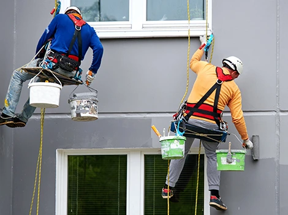

Peinture en Hauteur 62
Peinture Façade inaccessible Pas-de-Calais (62)
Travaux de peinture en hauteur dans le Pas-de-Calais (62)

Pourquoi confier vos chantiers à un spécialiste de la peinture en hauteur ?
Pour réaliser des travaux de peinture sans échafaudage, faire appel à une équipe de cordistes peintres reste la solution la plus efficace. Nos techniciens diplômés se déplacent rapidement, y compris dans les zones d’accès complexe que les méthodes classiques ne peuvent pas couvrir. Grâce à nos techniques d’accès sur corde, nous prenons en charge la peinture de façades inaccessibles et la rénovation de structures en hauteur en toute sécurité, avec soin et précision.
Quels supports pouvons-nous repeindre ?
Nos prestations de peinture en hauteur couvrent de nombreux supports : façades d’immeubles, pignons, murs extérieurs, bardages métalliques, charpentes, ouvrages techniques et installations industrielles. Nous adaptons nos techniques et nos produits à chaque chantier pour offrir un rendu durable, esthétique et conforme aux normes en vigueur.
Quel budget prévoir pour une peinture en hauteur ?
Le tarif d’une prestation de peinture en hauteur dépend de plusieurs paramètres : surface totale à traiter, nature du matériau, état des supports, difficulté d’accès, choix de la peinture et durée du chantier. Nos devis sont clairs et personnalisés. Pour une estimation précise dans le Pas-de-Calais (62), contactez-nous au 03 20 84 34 65 ou demandez votre devis gratuit et sur mesure .
CONTACTEZ - NOUS
VOS INTERROGATIONS LES PLUS COURANTES
Nous travaillons avec des peintures professionnelles ajustees a chaque support : acryliques, glycero, siloxanes, hydroplinthe selon le materiau (beton, metal, bois, crepi). Toutes nos peintures resistent aux intemperies.
Oui, c'est notre coeur de metier. Nos cordistes accedent a chaque zone de la facade par techniques sur corde. Cette approche est plus rapide, plus economique et moins contraignante qu'un echafaudage classique.
La duree depend de la surface a couvrir et de l'etat du support. Une facade standard se peint en quelques jours. Un planning detaille vous est communique apres analyse du projet.
Oui, la preparation est indispensable pour un rendu durable. Nous realisons le lavage haute pression, le traitement des fissures, la pose d'une primaire et le decapage si besoin avant l'application de la peinture.
Oui, nous proposons une garantie sur nos chantiers de peinture. Sa duree depend de la prestation realisee. Nos peintures professionnelles et notre savoir-faire garantissent une excellente tenue dans le temps.